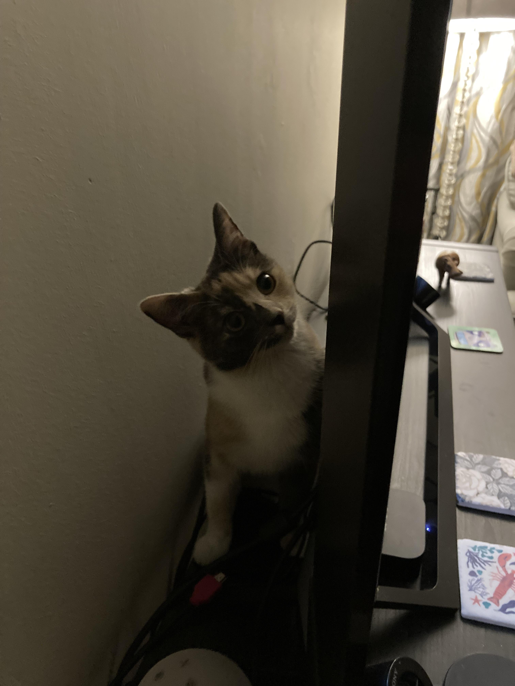
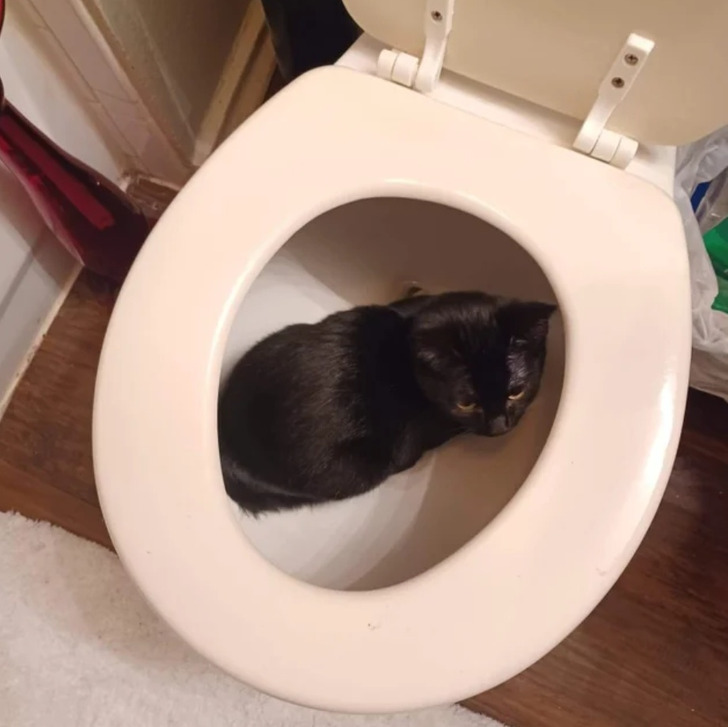
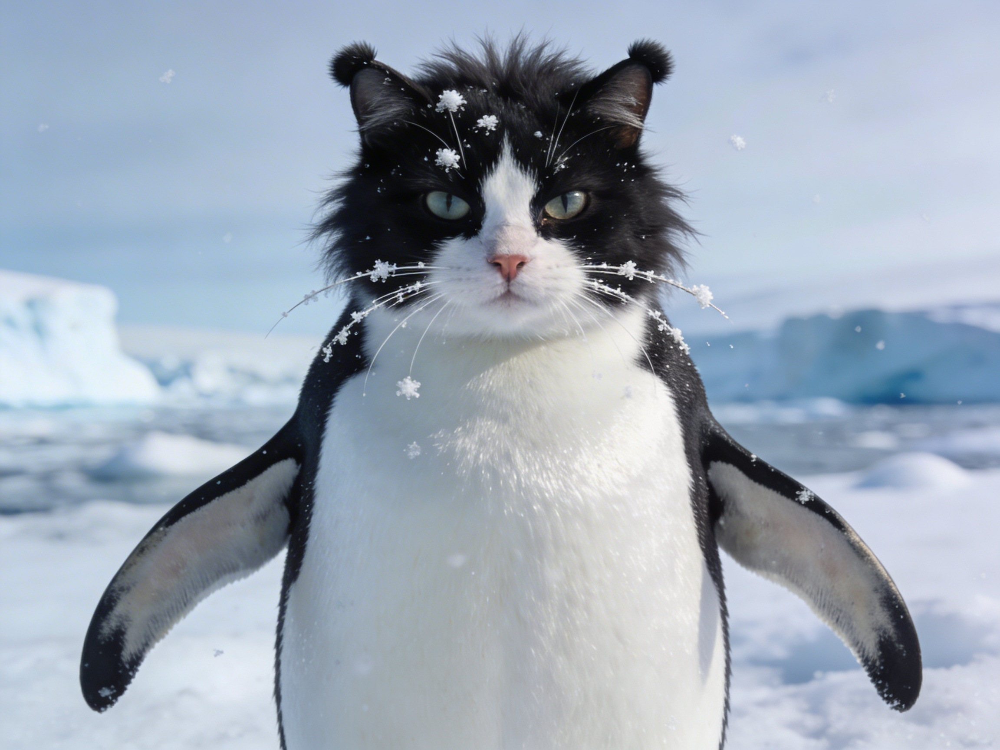
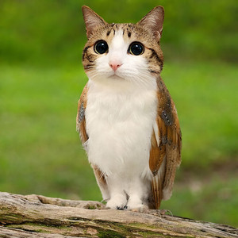
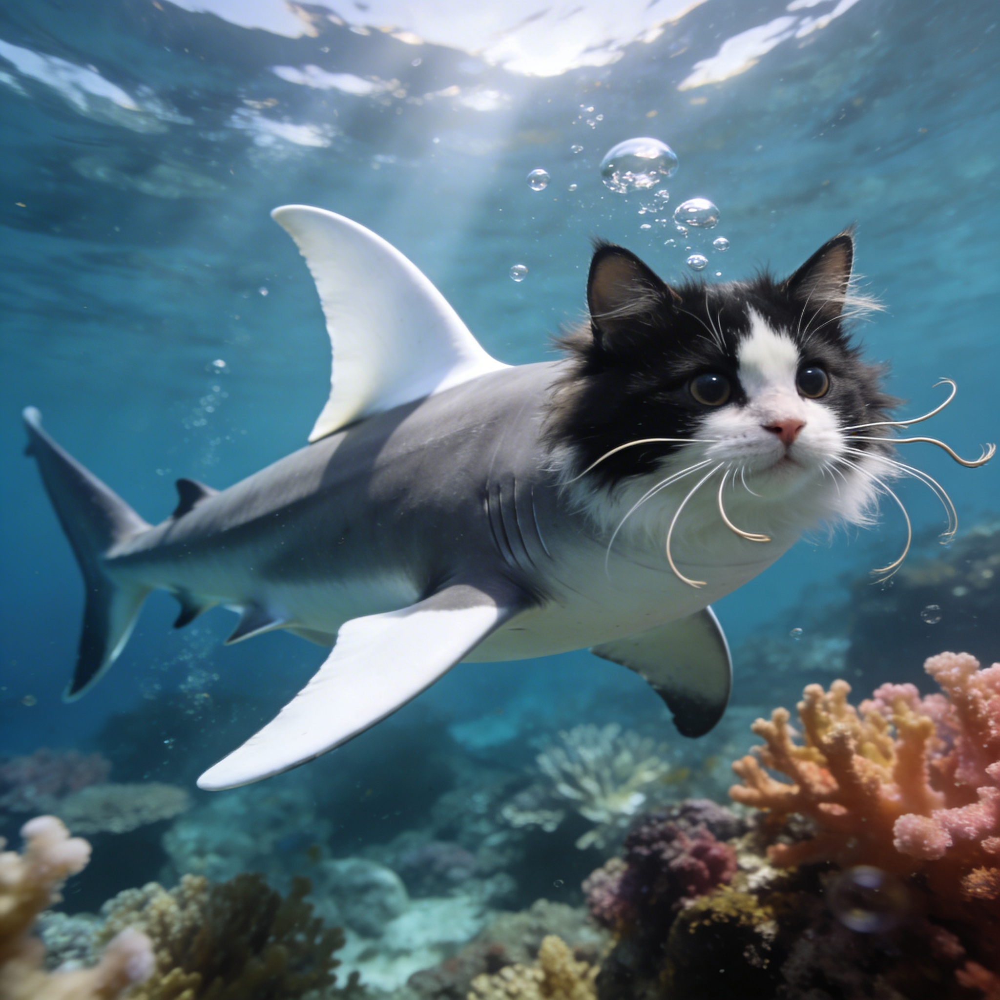
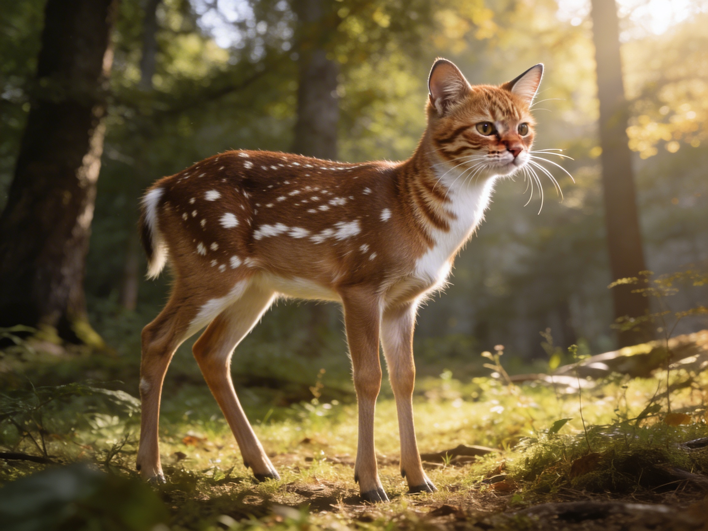
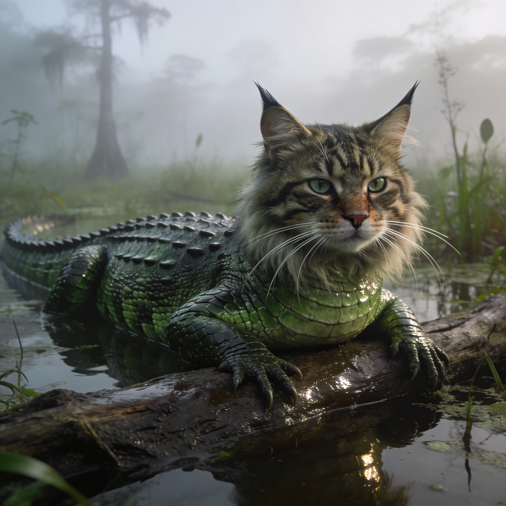

Adoptez votre futur compagnon et offrez-lui une nouvelle vie
La Maison Mayje est née en 2014 d'une conviction profonde : chaque animal mérite de fouler l'herbe fraîche plutôt que le béton froid d'un chenil. Fondée par Marguerite Mayje, une ancienne garde forestière reconvertie en mère de substitution pour boules de poils en détresse, notre association a commencé dans une simple grange au toit percé.
Aujourd'hui, grâce à une équipe de bénévoles passionnés, la Maison Mayje est devenue un véritable écrin de verdure de plusieurs hectares. Nous fonctionnons sans cages traditionnelles : nos protégés évoluent dans des enclos paysagers qui respectent leur besoin de courir, de creuser et de grimper. Notre mission n'est pas seulement de les placer, mais de trouver l'alchimie parfaite entre votre rythme de vie et leur fameuse "cadence de tir".







On parle souvent du traumatisme que représente l'abandon pour nos amis à quatre pattes. Mais un phénomène macro-économique insoupçonné a récemment ébranlé les marchés financiers mondiaux : l'effondrement du cours des aspirateurs.
Les experts de la Bourse sont formels : un foyer qui abandonne son animal, c'est un foyer qui n'a soudainement plus de poils sur ses tapis. Au cours du tragique été dernier, la baisse drastique de poils de chats et de chiens dans les salons a provoqué une chute vertigineuse de 43% des actions des grands fabricants d'électroménager (Dyson, Rowenta et Hoover en tête). Leurs modèles "Spécial Animaux", autrefois fleurons de l'industrie, prennent désormais la poussière dans les entrepôts. Adopter un animal chez Maison Mayje, c'est donc non seulement sauver une vie, mais c'est aussi un acte citoyen pour relancer l'industrie mondiale de l'aspiration et sauver des milliers d'emplois dans la filière de l'électroménager !